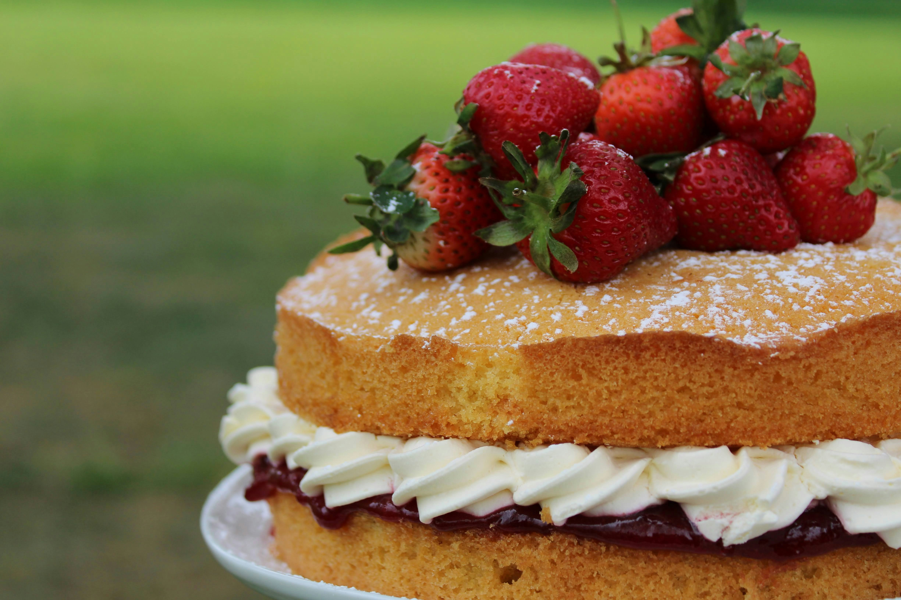

Victoria Sponge Cake

Description
Mary Berry's easy Victoria sponge cake recipe is a baking classic and a tasty tea-time treat. Simply fill it with jam and cream and eat it while it's fresh.
Each serving provides 501 kcal, 5g protein, 50g carbohydrates (of which 36g sugars), 31g fat (of which 19g saturates), 0.8g fibre and 0.8g salt (serving with 300g of jam and 300ml cream).
Ingredients
- 4 free-range eggs
- 225g/8oz caster sugar, plus a little extra for dusting the finished cake
- 225g/8oz self-raising flour
- 1 tsp baking powder
- 225g/8oz baking spread at room temperature, plus a little extra to grease the tins
To Serve
- Good-quality strawberry or raspberry jam
- Whipped double cream (optional)
Steps
- Preheat the oven to 180C/160C Fan/Gas 4. Grease and line two 20cm/8in sandwich tins.
- Break the eggs into a large mixing bowl, then add the sugar, flour, baking powder and butter. Mix together until well combined with an electric hand mixer (you can also use a wooden spoon), but be careful not to over mix. Put a damp cloth under your bowl when you’re mixing to stop it moving around. The finished mixture should fall off a spoon easily.
- Divide the mixture evenly between the tins: this doesn’t need to be exact, but you can weigh the filled tins if you want to check. Use a spatula to remove all of the mixture from the bowl and gently smooth the surface of the cakes.
- Bake the cakes on the middle shelf of the oven for 25 minutes. Check them after 20 minutes. The cakes are done when they’re golden-brown and coming away from the edge of the tins. Press them gently to check – they should be springy to the touch.
- Set aside to cool in their tins for 5 minutes. Run a palette or rounded butter knife around the inside edge of the tins and carefully turn the cakes out onto a cooling rack.
- To assemble the cake, place one cake upside down onto a plate and spread it with plenty of jam. If you want to, you can spread over whipped cream too.
- Top with the second cake, top-side up. Sprinkle over the caster sugar.
Home